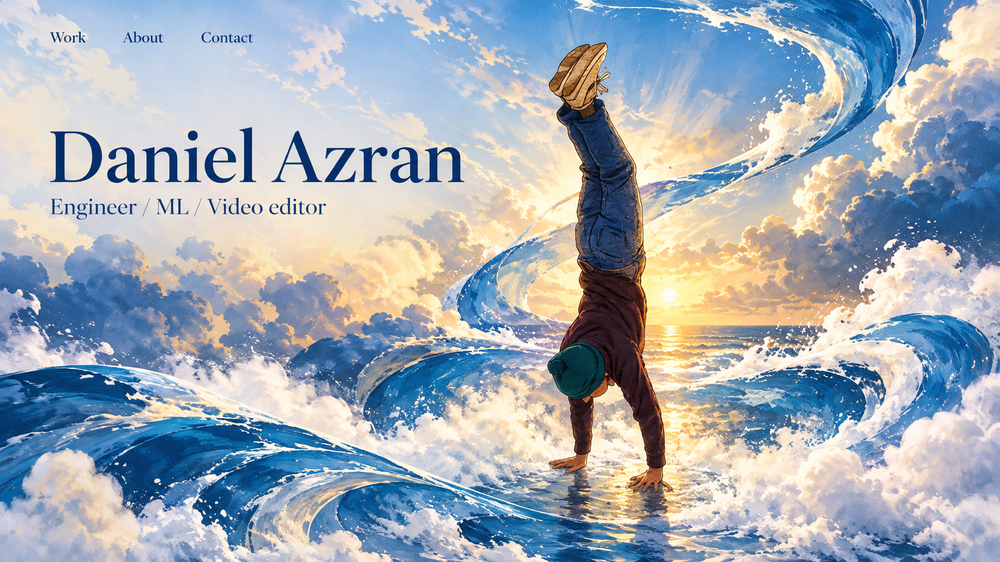
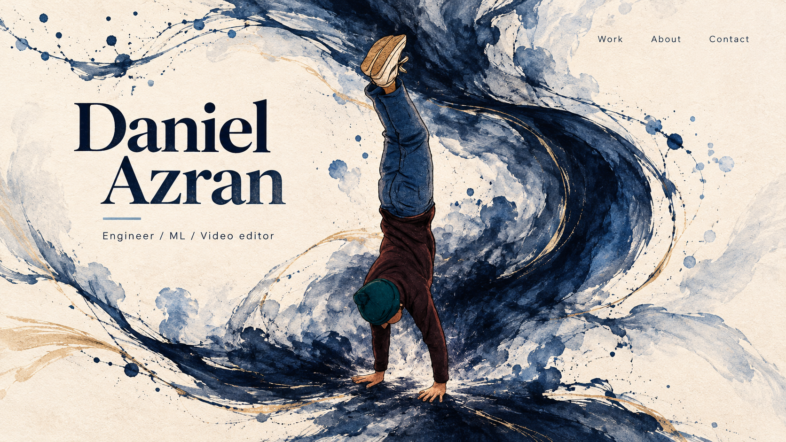
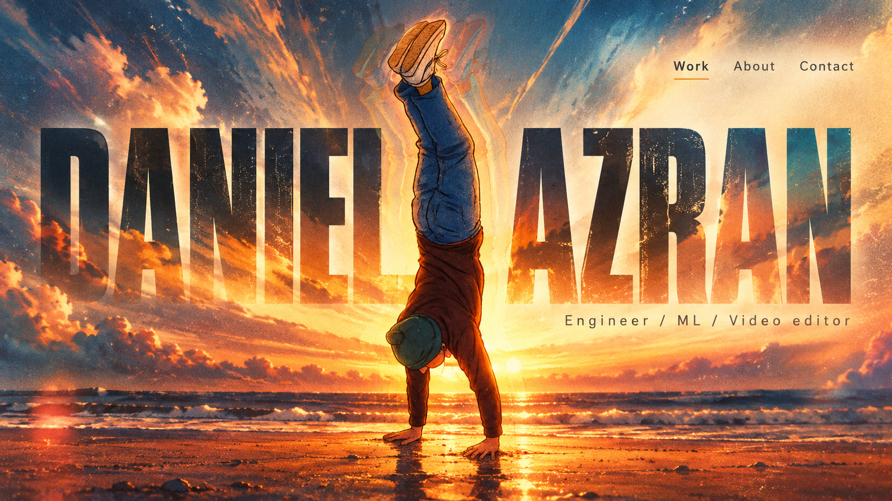
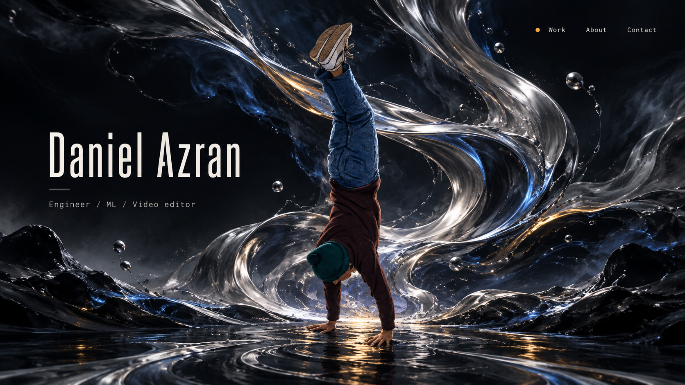
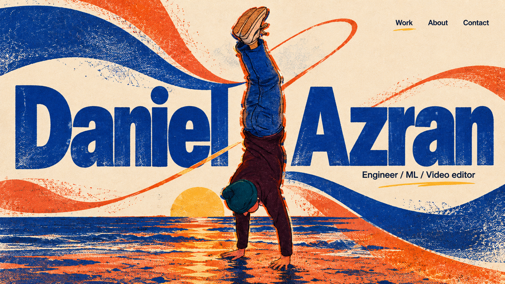
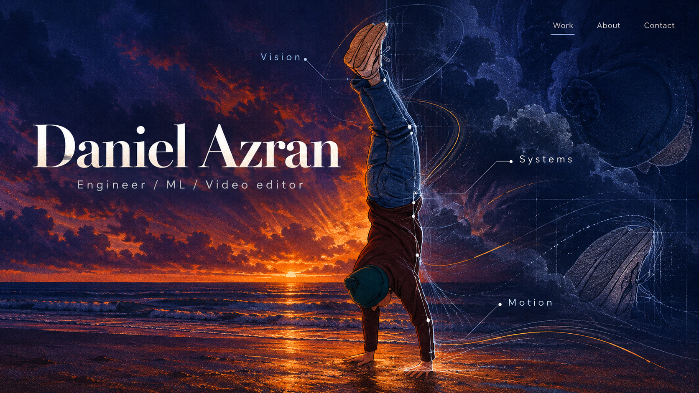
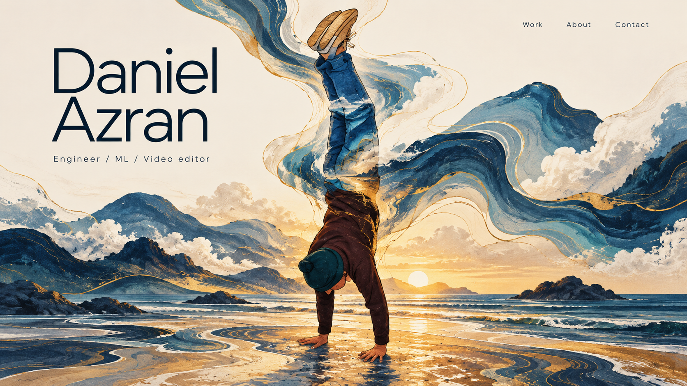
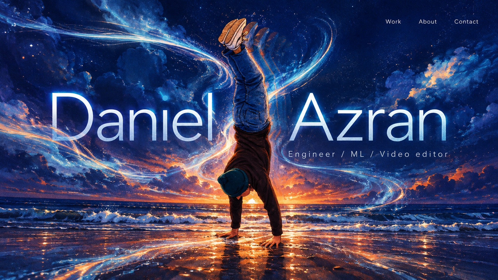
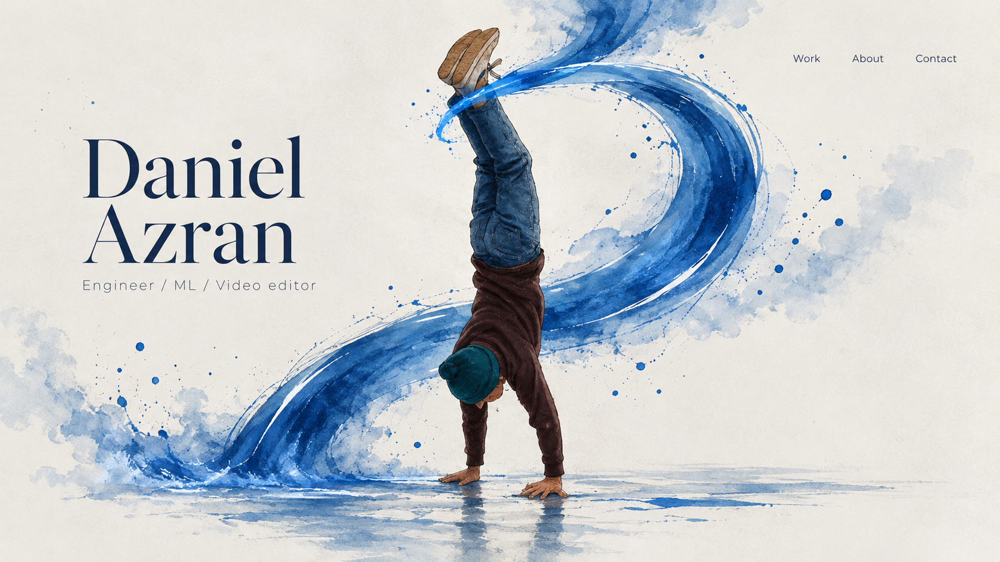
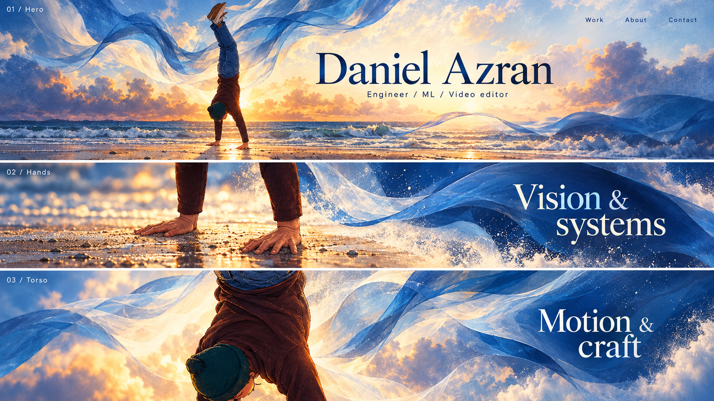

01
Elemental current
Painted water ribbons blend into soft mist around your figure.
Scroll thought Start full-body, follow a foam ribbon toward the hands, then travel upward along the silhouette.
Your handstand is the anchor. These drafts explore different materials, palettes, typography, and moods. Number 10 shows three frames of the masked body-camera idea.

Painted water ribbons blend into soft mist around your figure.
Scroll thought Start full-body, follow a foam ribbon toward the hands, then travel upward along the silhouette.

An expressive ink current becomes smoky vapor and frames the handstand.
Scroll thought Push toward a hand; let its contour turn into an ink path that opens the work section.

Your original sunset expands into a bright cinematic aura.
Scroll thought Enter through the backlight, pan across the torso, then let light reveal the next section.

A boundary-pushing dark composition with flowing silver and quiet blue light.
Scroll thought Zoom into a silver edge on the arm; it becomes a reflective mask for project imagery.

Bold printed texture, graphic curves, and imperfect layered ink.
Scroll thought Printed contour offsets separate as the camera pushes in, then align into project headings.

The handstand becomes a window between natural texture and analytical linework.
Scroll thought Pan over the mask; one region reveals vision, another systems, another motion.

Your figure becomes a living contour map filled with flowing color.
Scroll thought Travel inside the silhouette; contour bands expand into the next page composition.

A darker edit-inspired frame with light trails and controlled texture.
Scroll thought Follow a trail into a close crop, then resolve the afterimage into a clean information layer.

A calm minimal layout with one strong flowing gesture around the body.
Scroll thought The composition stays simple as the body grows; a single water arc guides each reveal.

Three frames show the full hero, a masked hand close-up, and a torso pan.
Scroll thought Full figure → hands and forearms → torso and cap, with information appearing in each composition.